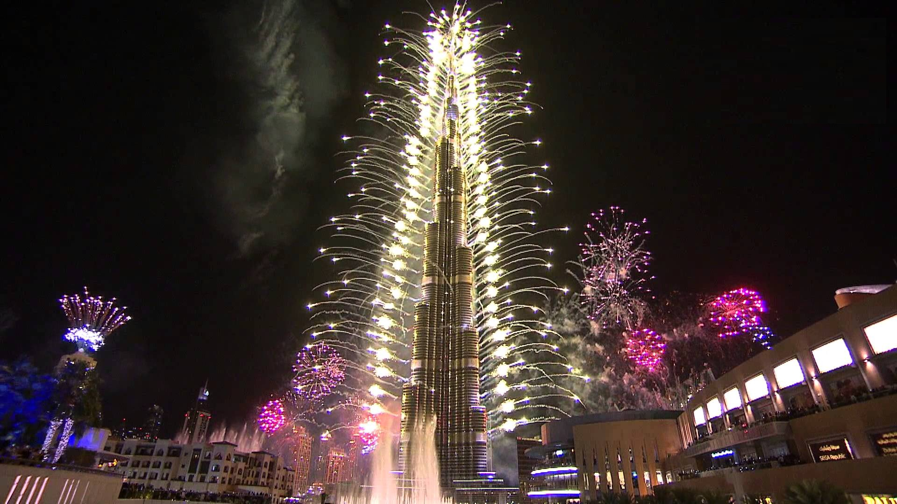
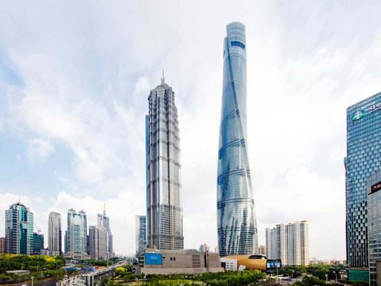
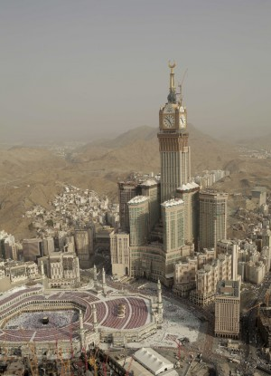
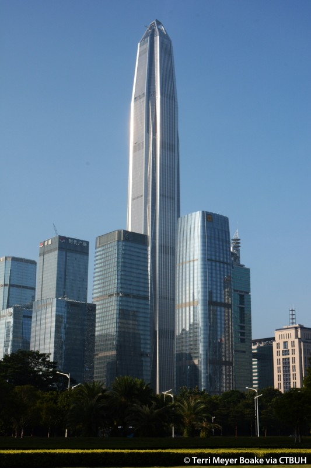
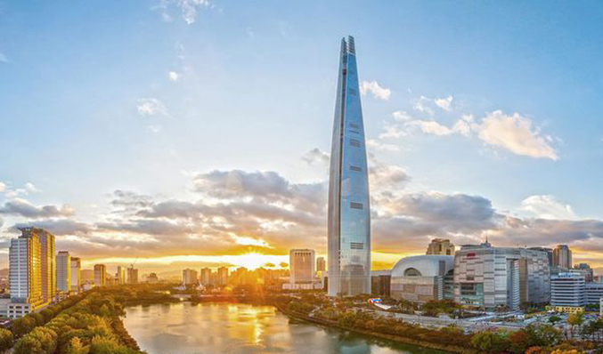
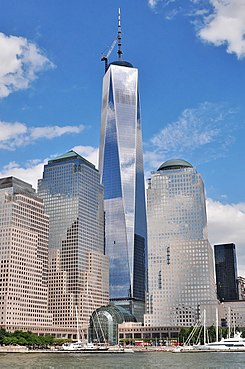
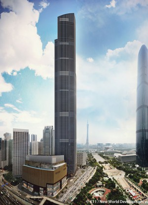
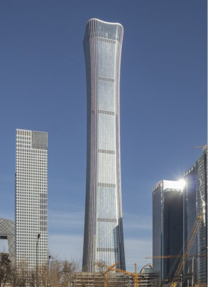
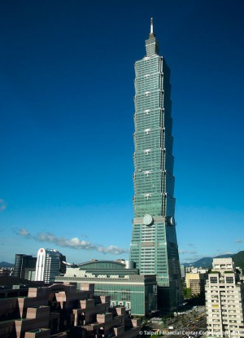

El edificio Burj Khalifa conocido también como Burj Dubai es el edificio más alto del mundo. Diseñado por Adrian Smith para la firma Skidmore, Owings & Merrill (SOM) se eleva a 828 metros de altura sobre la ciudad de Dubai en Emiratos Árabes Unidos. Su construcción contó con un presupuesto estimado de más de 4.000 millones de dólares, que se incrementó hasta los 20.000 millones para el desarrollo completo del Downtown Burj Khalifa. Comenzó a construirse el 21 de septiembre de 2004, siendo su inauguración oficial el 4 de enero de 2010. Cuenta con un hotel, residencias privadas, oficinas, restaurantes y hasta con un famoso mirador; en el Burj Khalifa se encuentran también los ascensores más rápidos del mundo.

Rumbo a convertirse en el rascacielos más alto de China y el segundo rascacielos más alto del mundo, la torre diseñada por los arquitectos de Gensler ha superado recientemente los 632 metros. Al término de 2014, la mega estructura en espiral completará un trío de torres -además de la torre Jin Mao y el Shanghai World Financial Center- para convertirse en el centro comercial de la ciudad, uno de los principales centros financieros de Asia, desarrollados a partir de tierras agrícolas en tan sólo 20 años.

En el corazón de la ciudad islámica más sagrada, Makkah Royal Clock Tower brinda un aire de modernización al bullicioso centro histórico de La Meca. La torre fue desarrollada como un componente del Proyecto de Dotación del Rey Abdulaziz y proporciona alojamiento cómodo para los devotos musulmanes que hacen el viaje a la ciudad cada año durante el período del Hajj. Está convenientemente ubicado junto a la Gran Mezquita, que puede albergar hasta dos millones de fieles en el transcurso del evento.
La torre del reloj se encuentra en el centro de un complejo de gran altura llamado Abraj Al-Bait. Seis edificios altos más pequeños lo rodean a diferentes alturas y se adaptan a usos residenciales y de hoteles. Fieles a su nombre, cuatro caras de reloj colosales están montadas cerca de la parte superior de la torre. Estos relojes tienen el récord de ser el más grande y el más alto del mundo. Por la noche, las caras del reloj están iluminadas por un millón de luces LED que transforman la torre en un faro verde y blanco. La escritura está inscrita encima de cada reloj, con las palabras "Dios es el más grande" en los lados norte y sur, mientras que el Corán adorna los lados este y oeste. La torre de la torre cuenta con un centro de observación esférico en su base. La aguja está cubierta con un brillante mosaico de oro que pesa 35 toneladas métricas. Una serie de servicios culturales están presentes en los niveles superiores de la torre.

Ping An Finance Center está ubicado en el distrito de Futian de la ciudad y representa una nueva generación de prototipos de rascacielos asiáticos: muy altos, muy densos e hiperconectados.
El Centro Financiero Ping An se levanta desde una ubicación prominente en el centro de la ciudad, conectándose a la perfección con las propiedades comerciales y residenciales vecinas, así como con el corredor ferroviario de alta velocidad del Delta del Río Perla. En su altura final, la torre simbolizará una ciudad que ha sido testigo de un crecimiento urbano sin precedentes, desde 300,000 personas hasta aproximadamente 10 millones, en los 35 años desde que se convirtió en la primera Zona Económica Especial de China.

A medio kilómetro sobre la ciudad de Seúl. 555 metros de altura son suficientes para situarse entre los cinco rascacielos más altos del mundo. Así es Lotte World Tower, la vertiginosa torre diseñada por la prestigiosa firma de arquitectura KPF para la capital de Corea de Sur, y cuya construcción ya ha finalizado.
Este coloso inmobiliario dispone de un total de 123 plantas, una piscina para quienes no teman las alturas -se sitúa en el piso 85- y el ascensor más rápido del mundo, capaz de elevar a los visitantes desde la calle hasta las últimas plantas en menos de un minuto, según la agencia de noticias Bloomberg.

La construcción comenzó el 27 de abril de 2006, casi 5 años después de la destrucción de las Torres Gemelas. A modo de ceremonia, la primera piedra se puso casi 2 años antes, el 4 de julio de 2004. Durante los primeros años fue conocida como la Torre de la Libertad (Freedom Tower).
El arquitecto encargado de la megaconstrucción fue David Childs, de la firma Skidmore, Owings and Merrill, creadora de edificios como el Burj Khalifa de Dubái, la Torre Jin Mao en Shanghái o la Torre Willis de Chicago.
Con 541 metros de altura, es actualmente el sexto edificio más alto del mundo, siendo el primero fuera del continente asiático. La azotea del edificio se encuentra a 417 metros de altura, exactamente igual que la altura de la torre 1 del World Trade Center original.
7. CTF Finance Centre

Guangzhou CTF Finance Center es una torre de uso mixto ubicada frente a Guangzhou International Finance Center y Canton Tower. El proyecto se encuentra junto a un gran parque central y un centro comercial subterráneo con intercambios de transporte, que integra el proyecto en la ciudad y en la región en general.
El diseño de Guangzhou CTF Finance Center se deriva de la síntesis eficiente de sus múltiples usos. Su forma está esculpida en cuatro puntos de transición principales: de oficina a residencial, de residencial a hotel, de hotel a corona y de corona a cielo. En lugar de disminuir para acomodar las placas de piso más pequeñas requeridas para diferentes programas, la torre retrocede en cuatro parapetos en ángulo. Estos cuatro reveses permiten terrazas exuberantes y espectaculares tragaluces.
Se prestó especial atención a la selección de materiales para la torre. Por lo tanto, una serie de sutiles montículos de terracota alinean las elevaciones de la torre. Este material jugó un papel muy importante en la historia oriental y occidental, y también es beneficioso desde un punto de vista ambiental. La energía incorporada de la terracota es mucho menor que el aluminio, el vidrio o el acero. Es autolimpiante y resistente a la corrosión. Además, puede producirse en muchos lugares de China, reduciendo el impacto ambiental del envío. Estos parteluces de terracota fueron diseñados para proyectarse desde el vidrio en un ángulo para proporcionar sombra en el exterior.
El edificio emplea una serie de herramientas de eficiencia energética para reducir su huella ambiental. Además de sus fuertes conexiones multiniveles al transporte público, el uso de enfriadores de alta eficiencia y la recuperación de calor de los condensadores enfriadores por agua contribuyen a la sostenibilidad del edificio.

CITIC Tower será el edificio emblemático del núcleo central de distrito de negocios de 30 hectáreas, planificado de manera integral.
La forma suavemente ascendente y curva de la torre se asemeja a una antigua nave ceremonial china, llamada "zun". El concepto de diseño es el de una cáscara transformadora que se dobla gradualmente para crear una forma dramática. Este concepto también se aplica a otros elementos clave de la torre, incluidas las entradas, el vestíbulo de la planta baja y la plataforma de observación. En la base, la torre empuja hacia el suelo con enormes soportes en las esquinas, mientras que la cubierta exterior se levanta suavemente y se estira hacia adelante en los cuatro lados. El diseño extiende físicamente el vestíbulo hacia afuera, formando espacios dinámicos de bajada. En la parte superior, la envoltura exterior se vuelve más transparente en la plataforma de observación y permite una mayor visibilidad del centro de negocios interior en forma de trompeta, que se ilumina por la noche, formando una baliza que será visible en toda la ciudad.
En comparación con una forma de torre supertall típicamente recta o cónica, el perfil cóncavo de la torre ofrece espacios de piso principal más valiosos y amplio espacio para el lavado de ventanas, así como otros sistemas de soporte, en la parte superior de la torre. Mientras que la parte superior grande presenta desafíos estructurales significativos, la base más grande brinda una oportunidad para el equilibrio estructural, el contraste formal y las distancias preferidas entre el núcleo y el perímetro.
En una ciudad con el mayor requerimiento de fortificación sísmica de las principales ciudades de China, el sistema estructural era particularmente sensible a los ajustes en la forma compleja del edificio. Los arquitectos e ingenieros utilizaron el modelado paramétrico para acelerar en gran medida el proceso de diseño y coordinación para garantizar que el diseño alcanzara una forma icónica y un sistema estructural sólido.

Ubicado en el distrito Xinyi de Taipei, un área conocida por sus servicios financieros y centros comerciales vibrantes, TAIPEI 101 representa un precedente mundial para el desarrollo sostenible de rascacielos. Obtuvo una certificación LEED Platinum para Operaciones y Mantenimiento en 2011, una proeza impresionante para una torre de su tamaño y complejidad.
La torre se eleva desde su base en una serie de módulos de ocho pisos que se abren hacia afuera, evocando la forma de una pagoda china. La parte superior de cada módulo alberga pisos mecánicos que albergan sistemas de basura, equipos de ventilación, almacenamiento de agua y servicios MEP. Cerca de la parte superior, una torre más pequeña cubre la estructura, formando un pináculo que se ha convertido en un espectáculo familiar para la ciudad. La fachada de la torre presenta muros cortina de vidrio verde de doble vidrio que son altamente reflectantes y bloquean la ganancia de calor solar en un 50 por ciento. Otras características sostenibles incluyen luminarias de eficiencia energética, controles de iluminación personalizados, accesorios de agua de bajo flujo y un sistema inteligente de control y gestión de energía.